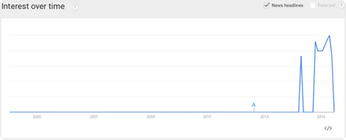
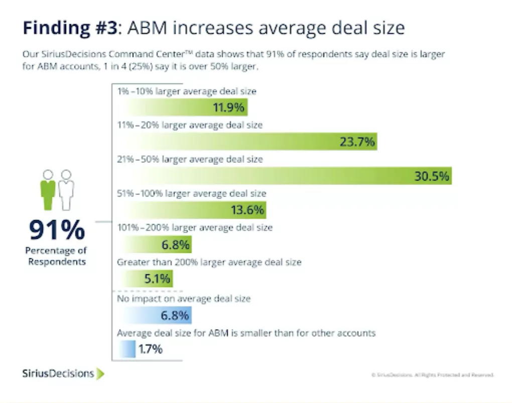
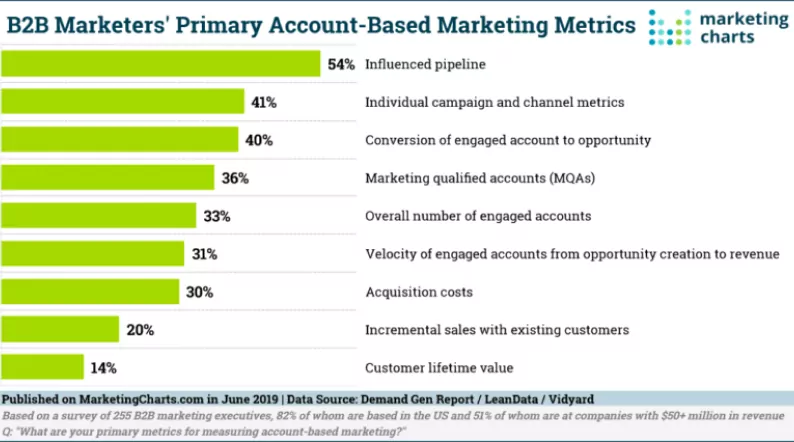

“Personalização no Marketing”
Quantas vezes você leu ou escutou essa frase nos últimos anos? E quantas vezes você e sua equipe realmente personalizaram cada etapa do processo de aquisição - ou mesmo de retenção - de clientes?
É comum que os novos conceitos de marketing se tornem bichos de sete cabeças por conta do abismo entre a teoria e a prática.
Lembra quando você ouviu falar sobre Inbound Marketing, talvez em 2009/2010? Não parecia surreal
atrair clientes gerando valor intelectual, em vez de destacar os benefícios do seu serviço logo
de cara?
Pois é. Estamos em 2022 e, para muitas empresas, ainda existe esse abismo no Inbound Marketing.
Nosso objetivo ao escrever este conteúdo para você, é justamente não deixar isso acontecer quando
o assunto for Account-Based Marketing: queremos criar a ponte entre teoria e prática, da forma mais
simples possível, para que sua empresa possa executar o MVP de um programa de ABM sem se perder no
meio do caminho.
Vamos trazer nossa experiência prática em ABM, abordando o cenário atual, test&learn, cases e muita
mão na massa.
Personalizar o processo de marketing e vendas B2B é uma necessidade urgente e não precisa ser esse
bicho de sete cabeças. Você vem com a gente?

Sumário
- 01. Mas afinal, o que é ABM?
- 02. O que não é ABM?
- 03. Uma estratégia Customer-Centric
- 04. O ABM no Brasil e no mundo
- 05. Desafios do Account-Based Marketing
- 06. Por que adotar o ABM: benefícios do Account-Based Marketing
- 07. O ABM é para minha empresa?
- 08. Como funciona um programa de ABM
- 09. O que são Key Accounts
- 10. Tipos de ABM?
- 11. Os pilares do Account-Based Marketing
- 12. Como aplicar o ABM: Account-Based Marketing na prática
- 13. Métricas de ABM
- 14. Resumo
Mas afinal, o que é ABM?
Para Justin Gray, CMO da LeadMD, Account-Based Marketing é “simplesmente o marketing bem feito”.
Para nós, da BOWE, ABM é uma alternativa dentro das estratégias de marketing para operações complexas.
Traduzindo: uma estratégia de marketing para vendas B2B de ciclo longo, aplicada a contas-nomeadas de
forma altamente personalizada.
Não estamos mais falando com centenas de leads [EMPRESAS] de uma vez, estamos falando de 1:1 com
stakeholders, representantes [PESSOAS] de empresas que não fogem nem uma vírgula do nosso ICP
(Ideal Customer Profile).
E isso, claro, exige muita tecnologia - mas não nos impede de concordarmos com Gray.
Desde Kotler lá atrás, com a definição dos 4 Ps, marketing (na teoria) é baseado em entregar exatamente
a transformação que seus prospects precisam para se tornarem clientes. Solucionar uma dor latente em
suas vidas - ou, no caso do B2B, em suas empresas.
Os 4 Ps (produto, preço, praça e promoção) são o embrião da customização que tanto falamos hoje em dia,
e o ABM é a entrega desse marketing altamente personalizado em vendas altamente complexas, através da
tecnologia.
O que não é ABM?
O Account-Based Marketing é uma combinação de ações executadas através de ativos de marketing que, em geral, são utilizados de forma descentralizada.
ABM x Inbound Marketing
Ou seja, o ABM não é APENAS Inbound Marketing, apesar do Inbound ser um ativo presente no ABM.
Enquanto o Inbound foca primariamente Volume - atingir o maior número de pessoas através de conteúdos de qualidade - no ABM, focamos menos no VOLUME e muito mais na QUALIDADE.
Por isso, a necessidade de personalização: gerar o conteúdo ideal que converse com as necessidades atuais de algum ou alguns prospect(s), dando início e continuidade ao relacionamento através da geração de valor intelectual.
Mas as diferenças não param aí. Na verdade, as principais distinções entre ABM e Inbound se dão no modelo de funil e no fluxo de trabalho.
No Inbound, o funil começa na atração, passa pelo interesse, depois pela nutrição da base qualificada e, só aí, se iniciam as tratativas comerciais.
Já no Account-Based Marketing, como diria Matt Heinz, Presidente da Heinz Marketing: “em vez de se pescar com rede, se pesca com arpão”.
Primeiro, são selecionadas as contas-chave que fazem sentido para a empresa, dentro do ICP. Depois, são identificados os contatos deste prospect, para então nutrir esses contatos e, finalmente, encaminhá-los para o comercial.
Agora, quando falamos de fluxo de trabalho, a diferença é tão simples quanto difícil de ser aplicada.
No Inbound, o fluxo mais comum é Marketing > Vendas.
No ABM, os dois setores devem trabalhar em conjunto.
Na verdade, não é exagero dizer que o ABM não existe sem o alinhamento entre marketing e vendas.
Material complementar: Integrar Marketing e Vendas é uma tarefa para ontem
Nenhuma ação deve ser totalmente unilateral. Cada touchpoint e os caminhos que levam até eles devem se conversar para criar uma jornada única para o prospect. O que também torna o ABM muito diferente do Outbound, na sua forma mais pura.
ABM x Outbound Marketing
O ABM não é APENAS outbound marketing, apesar de utilizar do outbound em conjunto com o inbound para gerar demanda de maneira holística.
Enquanto o Outbound busca oferecer produtos ou serviços a potenciais compradores - muitas vezes com os setores de marketing e vendas abordando pessoas completamente diferentes no processo, que nunca tiveram contato prévio com a empresa que está ofertando - o ABM utiliza canais de outbound para levar os prospects a touchpoints ou conteúdos de valor que mantém o relacionamento ativo.
Além disso, o Outbound costuma ser feito em formato de campanhas, com início, meio e fim. Já o Account-Based Marketing toma forma de programa, com relacionamentos a longo prazo e sem fim definido, tornando-o uma estratégia de marketing Customer-Centric.
Uma estratégia Customer-Centric
Esqueça a diferença entre agências/consultorias de marketing e empresas B2B: o ABM é igual para todos.
É sobre personalizar suas ações de marketing para solucionar uma dor do prospect ou cliente.
Depois de testar e aprender muito, entendemos que o ABM pode ser guiado 3 palavras-chave:
1. Personalização
2. Relacionamento
3. Paciência
Quando falamos de marketing ou vendas B2B, é comum a ideia de que estamos falando com empresas. Mas a personalização exige o entendimento de que estamos falando com pessoas. É o que há de mais puro dentro do conceito de “relacionamento”.
Ao criarmos ações personalizadas dentro de um programa de ABM, buscamos atingir pessoas com as quais vamos nos relacionar - em geral por um extenso período de tempo - em prol de um ganho mútuo no fim.
Mas quem são essas pessoas?
De forma bem objetiva, o ABM se aplica a:
- Parceiros da empresa (buscando torná-los canais de venda)
- Clientes (buscando rentabilizar ainda mais clientes que eu já estão na carteira com upsell ou cross-sell)
- Prospects (buscando a conversão de leads em clientes)
Falando de forma empírica, uma vez que um desses grupos foi abordado em programas de ABM da Bowe, eles perceberam como estamos estamos preocupados com sua satisfação, buscando solucionar problemas e melhorar resultados.
Apesar de se tratar de uma estratégia de marketing, o ABM acabou se tornando o nosso melhor canal de relacionamento. Parceiros, clientes e prospects começaram a enxergar valor nas conversas comerciais, em vez de vê-las como SPAM.
Conversas mais focadas em soluções e menos em vendas, acabam traduzindo as necessidades deles dentro das soluções que oferecemos.
É aquela mundialmente famosa história de usar tecnologia para promover a relação entre pessoas. No fim, eles se sentiram compreendidos por conta da personalização.
E por falar em mundo…
O ABM no Brasil e no mundo
Tendências em marketing e vendas costumam nascer em determinadas regiões (prioritariamente grandes complexos urbanos com largas operações comerciais) perante determinados desafios e, aos poucos, se espalhar pelo mundo conforme seus resultados vão se mostrando positivos.
Com o ABM não foi diferente.
Mesmo que citado pela primeira vez em 1993, no estudo The One To One Future, o ABM só começou a entrar nas pautas de reuniões em meados em 2014, como mostra o Google Trends:
De lá pra cá, as evoluções nessa estratégia de marketing foram lentas, porém graduais. Até que em 2020 aconteceu algo que atingiu não só grandes complexos urbanos com largas operações comerciais, mas sim todo o mundo: a pandemia do Covid-19.
O The 2020 State of ABM Report, da Terminus, mostra que apenas 5,8% dos entrevistados ainda não tinham um programa de Account-Based Marketing ativo em suas empresas - em comparação com 23% no ano anterior.
E não é para menos: em uma pesquisa da ITSMA com a ABM Leadership Alliance, 87% dos respondentes disse que programas de ABM oferecem resultados melhores que qualquer outro investimento de marketing.
Quando todo o mercado entra em recessão (neste caso, por conta da pandemia), é natural que os investimentos em comunicação diminuam ou se virem unicamente para estratégias com alto ROI comprovado.
Em outro estudo da DemandGen, focada no mercado estadunidense, 76% dos entrevistados disseram que estratégias de ABM oferecem ROI superior em relação a outras estratégias de marketing. Quando a mesma pergunta é feita aos entrevistados de um estudo da The CMO Survey, que analisa o marketing em meio à pandemia, 87% dos respondentes assume que o ABM supera o ROI de qualquer outra estratégia de marketing.
Ainda no estudo da DemandGen, o Account-Based Marketing é apontado como estratégia com maior priorização de investimento, sendo citado por 61% dos entrevistados.
Aquela mesma pesquisa da ITSMA, citada acima e também focada no mercado estadunidense, mostra que 27% da verba de marketing B2B em todo o país está sendo destinada, de alguma forma, a programas de ABM.
Já no Brasil, os números - além de difíceis de serem encontrados - ainda deixam a desejar.
Apesar de 76% dos respondentes do estudo da DemandGen esperarem por um atendimento personalizado quanto às suas necessidades de marketing, apenas 17% dos orçamentos de marketing no país são destinados ao ABM, segundo pesquisa da SalesForce.
E ainda mais alarmante que isso, é saber que apenas 31,3% das empresas brasileiras usam ferramentas de marketing e vendas que se conectam - algo essencial para o Account-Based Marketing acontecer, segundo a pesquisa Maturidade do Marketing Digital e Vendas no Brasil.
Mas não para por aí.
Quando falamos de ferramentas para ABM no Brasil, o buraco é mais embaixo.
Desafios do Account-Based Marketing
Em um cenário global, a implementação do Account-Based Marketing oferece desafios comuns aos que teríamos implementando qualquer estratégia de marketing: começando por falta de dados de qualidade.
Dados de ABM
Dados são a base para qualquer estratégia de marketing em 2022 e adiante.
Com eles, paramos de jogar iscas no colo de milhares de pessoas para que uma delas, com sorte, seja atingida de maneira assertiva pela mensagem.
Como diz Seth Godin, da maneira mais didática possível, “marketing é a arte de atingir o mínimo público viável”.
A partir do momento que abrimos mão do volume para focar na qualidade, devemos direcionar todas as ações para dores muito específicas, comunicadas para pessoas-chave dentro das
empresas que precisamos prospectar ou otimizar a parceria.
Nesse contexto, afirmar que não há mais espaço para feeling é chover no molhado.
Ao mesmo tempo, adquirir dados se torna uma tarefa ainda mais difícil, uma vez que estamos falando com poucas pessoas com tanta especificidade.
Vamos falar de ferramentas de ABM ainda nessa seção, mas só para você ter uma ideia, um ABM Stack é basicamente feito de ferramentas de aquisição e análise de dados:
Um bom caminho é entender (de uma vez por todas) que o programa de ABM deve se comunicar com pessoas, não empresas.
Os dados devem oferecer insights sobre:
-
quem são essas pessoas
-
quais as suas dores a serem solucionadas
-
quais os touchpoints para impacta-las
-
qual a mensagem a ser passada
Equipes de ABM
Grande parte dos desafios do ABM estão voltados à equipe que vai planejar e executar o programa:
-
alinhamento entre marketing e vendas
-
falta de braços para desempenhar as funções necessárias
-
falta de habilidades essenciais para o ABM, como a análise de dados, por exemplo
-
falta de apoio dos gestores ou mesmo C-Levels no processos
Existem formas muito simples de driblar alguns desses desafios.
Grande parte da falta de apoio dos gestores se dá por verem o ABM como um experimento, não uma estratégia sólida e eficaz. Como veremos um pouco mais a frente, o Account-Based Marketing tem números surpreendentes quando falamos de ROI, o que pode ajudar muito na hora de convencer toda a cadeia hierárquica de sua urgência.
Equipe dedicada, verba para treinamentos e mesmo verba para contratações podem surgir a partir daí.
Agora, quando esbarramos no abismo entre marketing e vendas, a situação pode ficar um pouco mais
complicada.
É difícil achar métricas comuns para times que, via de regra, atuam de forma individualizada.
Alinhar MQL e SQL é parte da solução, mas ainda é preciso entender que o trabalho do marketing
é fazer a equipe de vendas trabalhar.
Os objetivos precisam ser compartilhados e buscados em conjunto de ponta a ponta.
Para isso, deve-se compartilhar dados de ambos os lados, a comunicação deve ser constante e
as métricas individuais a cada time devem ir apenas até parte do processo, estabelecendo
unicamente métodos de cobrança e entrega entre gestores e equipe.
Ferramentas para ABM
A falta de verba pode ser um dos maiores desafios, uma vez que implementar ferramentas
de Account-Based Marketing pode ser uma iniciativa de alto investimento.
Mas e se as ferramentas para esse fim nem existirem ainda?
No Brasil, pelo menos, ainda não existe uma específica para ABM:
Tecnologias ABM
- quem se propõe a resolver:
Mercado norte americano
Mercado brasileiro
(Não existe ferramenta nacional)
Ferramentas adaptadas:
Principais dores na adaptação de ferramentas:
-
Não possibilitam alta personalização
-
Demandam muito trabalho operacional devido falta de automação e integração
-
Dados muito descentralizados e sem visão integrada da jornada de compra
-
Não permitem ter exata mensuração dos resultados
-
Custo de contratação de várias ferramentas
Mas em todo o mundo, as ferramentas que abrangem todas as necessidades do Account-Based Marketing ainda são escassas. O mercado ainda precisa facilitar muito o acesso a:
-
Ferramentas holísticas de ABM
-
Ferramentas de Predict
-
Ferramentas de BI
-
Ferramentas de Testes
Não à toa, o stack para se executar um programa de ABM são um apanhado de SaaS para Inbound, Outbound e dados (como falamos há pouco):
The Rich Man’s ABM Stack:
All the Tools You Need to Execute Your ABM Strategy
Como vemos, grande maioria das empresas utiliza as ferramentas já aplicadas a outras frentes de marketing e vendas para rodar programas piloto de ABM, testando resultados antes de partir para uma solução específica.
Falando em números:
+ 70%
das empresas que trabalham com ABM utilizam:
-
E-mail marketing
-
Site
-
CRM
-
Mídias sociais
50% a 70%
das empresas que trabalham com ABM utilizam:
-
Eventos
-
Anúncios (de Google à Social Media Ads)
-
Insights Tools (Analytics, Sales Navigator, ferramentas de inteligência de mercado etc)
-50%
das empresas que trabalham com ABM utilizam:
-
Ferramentas específicas de ABM
-
Chatbots
Mas calma, nem tudo está perdido!
Dificuldades à parte, as vantagens do ABM fazem tudo valer a pena. Então respire, pegue
um café e acompanhe a gente para o lado bom da história.
Por que adotar o ABM: benefícios do Account-Based Marketing
Hora de convencer seus executivos parceiros e gestores de equipes a implementar o ABM. Para isso, você vai precisar saber que entre suas principais vantagens estão:
- Alto ROI;
- Aumento de receita;
- Resultados mais claros, a partir do alinhamento entre marketing e vendas;
- Diminuição do ciclo de vendas;
- Melhora em resultados secundários, como relacionamento e retenção de clientes.
Fora isso, na Bowe acreditamos que seu principal objetivo é solucionar as dores específicas e urgentes:
- atingir um público que o inbound não consegue impactar;
- o nível de negociação é muito complexo, criar estratégias multicanais para simplificar negociações de alto nível de complexidade;
- ampliar a cultura de testes da empresa para guiá-la a um mindset de inovação, começando pelo marketing e seguindo para todos os outros setores.
Mas vamos focar onde o calo aperta mais:
O ROI do Account-Based Marketing
Existe uma infinidade de dados que nos fazem abrir os olhos para os resultados de
um programa de ABM.
Vale relembrar que, lá em cima, quando exploramos os números do ABM, citamos que 87%
dos respondentes de uma pesquisa da The CMO Survey afirmaram que essa estratégia supera
o ROI de qualquer outra estratégia de marketing. Em outra pesquisa da DemandGen, 76% dos
respondentes disseram o mesmo.
Exatamente a mesma pergunta foi feita em uma pesquisa da ITSMA, e quase 85% dos participantes
confirmaram o ABM como estratégia de marketing que mais entrega ROI.
Dificilmente, 3 estudos com números tão próximos estariam exagerando os resultados. Concorda?
A ITSMA, inclusive, dividiu a percepção de ROI dos respondentes entre programas de ABM em
estágios iniciais e já maduros. Os resultados continuam surpreendendo:
Indo além em relação ao ROI de ABM.
O ROI é uma das métricas mais importantes do marketing, mas deixa outros benefícios
fora do seu cálculo.
Em uma pesquisa da Marketo, 84% dos participantes disseram que o ABM beneficia largamente
a retenção de clientes, além de expandir as relações com clientes já existentes (upsell,
cross-sell e diferentes tipos de parceria).
Outro estudo da MarketingProfs mostra que o alinhamento de marketing e vendas (necessário
para o ABM) aumenta a taxa de retenção de clientes em 36%. E isso diz muito sobre o seu
crescimento de receita.
Para você ter ideia, um estudo da SiriusDecision mostrou que empresas B2B com operações
de marketing e vendas bem alinhadas, conseguem agilizar em 24% o crescimento de sua
receita em até 3 anos, e 27% o crescimento de seu lucro líquido neste mesmo período.
Quando falamos de resultados individuais, empresas com os dois setores alinhados conseguem
alcançar até 208% mais receita através de ações de marketing,
segundo a Marketo.
Ou seja, o aumento de receita através do ABM é uma realidade.
Aumento de receita usando ABM
Vamos direto ao ponto: 91% das empresas que usam ABM aumentam seu negócio. 25% delas, afirmam ter um aumento maior a 50%, segundo pesquisa da SiriusDecisions:

“Ficou surpreso:
então confere esse estudo sobre o aumento de receita com ABM.
Uma pesquisa da ABM Leadership Alliance mostra que, após implementar
o Account-Based Marketing, as empresas entrevistadas tiveram um crescimento de 171% nos
valores dos seus contratos, comparado às suas médias anuais.
E não é para menos. Uma vez que 100% dos clientes adquiridos através
do ABM estão dentro do ICP, a retenção é quase como uma certeza.
Aqui na BOWE, pregamos que não existe métrica melhor para se calcular os resultados
de marketing do que a intersecção CAC x LTV (Custo de Aquisição de Clientes x Lifetime
Value, que é Lucro líquido trazido pelo cliente durante todo seu contrato). Uma vez que o
cálculo é feito, fica fácil entender porque estamos focando nossos esforços em
criar programas de ABM de alto impacto.
Isso prova a teoria de Seth Godin, que comentamos acima. Estamos na era do mínimo público viável!
https://www.youtube.com/watch?v=kIAZ6v7wN5U
Ainda em dúvida?
O ABM é para minha empresa?
O ABM, assim como o Inbound, é uma estratégia feita para resolver certas dores do mercado B2B.
Isso significa que ele não pode ser aplicado em outros?
Não!
Isso significa que ele oferece os melhores resultados quando:
-
Você vende soluções de alto valor ou complexidade
-
Seu ciclo de vendas é longo
-
As suas vendas são consultivas
-
Seu mercado é totalmente nichado
-
A decisão de compra está na mão de stakeholders que precisam ser influenciados
Alguma dessas alternativas conversa com sua empresa?
Então é hora de colocar a mão na massa!
Como funciona um programa de ABM
A partir de agora, começaremos a nos aprofundar no planejamento e na construção do MVP de
um programa de Account-Based Marketing.
Vamos iniciar entendendo:
- O que são as Key Accounts e Account Managers
- Campanha Programa?
- Quais os tipos de ABM
- Como funciona cada tipo de ABM
- Quais as táticas para cada tipo de ABM
Você nos acompanha?
O que são Key Accounts
As contas-chave, ou contas-nomeadas, são a personificação daquela história: 20% dos clientes que geram 80% dos lucros. São clientes essenciais para a empresa.
Em um programa de ABM, Key Accounts são prospects dentro do ICP; clientes com alto potencial de expansão; e/ou parceiros com alto potencial de novos negócios.
Definidas as Key Accounts (vamos ensinar como mais pra frente), todo o programa deve ser encabeçado
por Account Managers (Gerentes de Conta) que, junto com suas equipes, terão que personalizar cada
ação para impactar, conversar e resolver as dores dos responsáveis por essas contas-chave.
Campanha ou Programa?
Já falamos disso lá em cima, mas vale resgatar para entendermos com excelência os tipos de ABM.
Diferentes das outras estratégias de marketing, que são majoritariamente sazonais e baseadas em
campanhas, o ABM é majoritariamente baseado em programas.
Isso quer dizer que ele nasce sem um fim pré-determinado. Deve ser aplicado continuamente para manter
bons relacionamentos e identificar novas oportunidades de negócios.
Tipos de ABM
Sabendo o que são Key Accounts, podemos mergulhar nos tipos de ABM.
O Account-Based Marketing é dividido em 3 tipos de abordagem:
01. Programático
Um para muitos
02. Lite
Um para poucos
03. Estratégico
Um para um
Para ficar mais fácil de entender:
01.
Programático
02.
Lite
03.
Estratégico
Agora que você já sabe o que é e como funciona cada tipo de Account-Based Marketing, que tal entender os pilares que vão sustentar seus programas de ABM?
Os pilares do
Account-Based Marketing
Essa é a última camada de conhecimento antes de montarmos o planejamento do seu MVP de Account-Based Marketing.
Pilares do ABM nada mais são do que pontos de atenção que devem ser levados em consideração durante todo o programa:
- Inteligência de Fluxo;
- Touchpoints de valor;
- Abordagem multicanal;
- Otimização.
Vamos entender melhor cada um deles?
Inteligência de Fluxo
Como vimos lá atrás, um programa de ABM exige os melhores mundos do Inbound e Outbound. Isso significa alinhar marketing e vendas para trabalhar com demandas ativas e receptivas:
Material complementar:
Vamos falar sobre Geração de Demanda?
As possibilidades são muitas e as tarefas não estarão sob a responsabilidade de um único
gestor, ou mesmo de uma única equipe. Então, como levar inteligência a esse workflow?
Levantar continuamente as dores e mapear continuamente os stakeholders.
Um programa de ABM exige entendermos necessidades reais, tendo em mente pessoas reais (em vez de personas), para definir touchpoints e criar fluxos de trabalho mais inteligentes tanto em marketing quanto em vendas.
Touchpoints de valor
Não existe “dar atenção demais” quando falamos de pontos de contato. No ABM então, onde a coisa vai pro lado pessoal, eles podem ser seus melhores amigos ou piores inimigos.
Pra gente, o segredo é enxergar touchpoints como um canal para estreitar relacionamentos, não como mais uma oportunidade de empurrar a venda.
Em um programa de ABM, é preciso gerar valor para seu prospect cada vez que estiver em contato com ele, independente do canal escolhido.
Abordagem multicanal
Um touchpoint que agregue valor intelectual pode ser um conteúdo no blog para tirar uma
dúvida rápida, um e-book sobre aquela dor específica ou uma newsletter sobre atualizações
do mercado que o prospect atua.
Já um que agregue valor prático, pode ser um workshop - que pode acontecer em um evento
presencial, criando também a possibilidade do prospect enxergar valor no networking.
Quando fazemos Account-Based Marketing, precisamos pensar amplo, contemplar as
possibilidades que conversem com aquelas Key Accountss tanto no online quanto no offline
- e nunca deixar de rever a estratégia.
Otimização
Lembre-se: quando falamos de Account-Based Marketing, estamos falando de programas, não campanhas.
Esse esforço a longo prazo exige constante otimização para continuar gerando resultados e mantendo o ROI lá no alto.
Pronto. Já temos um bom alicerce para seu programa de ABM. Agora, é hora de planejá-lo!
Como aplicar o ABM:
Account-Based Marketing na prática
Até aqui, vimos toda a teoria sobre o Account-Based Marketing. Entendemos
porquê e quando aplicá-lo, quais os desafios pelo caminho e os resultados
que podem ser esperados.
É agora que os conteúdos sobre ABM começam a se divergir. Afinal, cada empresa
tem sua própria metodologia para colocar o Account-Based Marketing em prática.
Nós trouxemos o passo a passo que vem dando certo pra gente aqui da BOWE e
nos ajudando a construir cases incríveis junto a marcas como Lenovo, Zoop e Pars:
Passo 1: Escolhendo o tipo de ABM
Passo 2: Definindo Key Accounts
Passo 3: Entendendo as contas
Passo 4: Jogando com as necessidades das contas
Passo 5: Mapeando os stakeholders da conta
Passo 6: Definindo propostas de valor
Passo 7: Planejando o workflow de marketing e vendas
Passo 8: Executando seu programa de ABM
Passo 9: Avaliando resultados constantemente
Passo 10: Escalando seu programa de ABM
Passo 1
Escolhendo o tipo de ABM
Lembra dos tipos de ABM?
- Programático (um para muitos);
- Lite (um para poucos);
- Estratégico (um para um).
Para facilitar o processo, tente responder às seguintes perguntas:
- Qual deles sua empresa tem braços, expertise e carteira para atender hoje?
- Quantos Account Managers você tem?
- Cada um será responsável por quantas contas?
- Qual o nível de personalização que você deseja na entrega?
Entendendo qual tipo de ABM sua empresa consegue abraçar, chegou a hora de definir as contas.
Passo 2
Definindo Key Accounts
Talvez, essa seja a parte mais delicada de todo o processo. Uma vez que você define
se vai trabalhar um para muitos, um para poucos ou um para um, é hora de definir as
contas-nomeadas que farão parte do seu programa.
Definir Key Accounts envolve um estudo de base e de mercado para entender:
- Quais clientes, que já fazem parte da carteira, oferecem a oportunidade de otimizar a parceria para que sua empresa possa solucionar novas dores dentro de suas expertises;
- Quais seriam as empresas ideais para se tornarem clientes;
- Quais dessas empresas ideais tem fit com seu business plan.
Independente da quantidade de contas com qual sua empresa vai trabalhar, o esforço é o mesmo: no um para um, o estudo vai ter que ser aprofundado para entender se há a possibilidade de alta personalização e como ela poderá ser aplicada; no um para muitos, o estudo vai ter que entender a fundo um cluster e as possibilidades que ali habitam, com dores comuns e individuais de um “grande” número de empresas.
Passo 3
Entendendo as contas
Hora de se aprofundar nas contas selecionadas. Para tanto, é preciso entender o que está direcionando essas contas:
- Qual o cenário atual das contas, individualmente?
- O segmento de atuação delas está em baixa? Está em alta?
- E quais as oportunidades que cada uma das opções acima oferecem?
- O que buscam hoje? Novos projetos? Ampliação? Investimentos?
Passo 4
Jogando com as necessidades das contas
Esse é o passo que vai definir quais das contas selecionadas efetivamente ficam
para o programa, e quais não mostram tantas oportunidades de render frutos.
Nesse ponto, você e sua equipe devem se perguntar: como fornecedor de uma solução,
como posso atuar com essas contas para auxiliá-las a chegar no resultado que necessitam
hoje?
Você já vai ter um estudo prévio sobre cada uma delas. E agora, respondendo a essa
pergunta, vai ficar fácil reavaliar as escolhas e entender as contas finais que
irão participar do seu programa de ABM.
Separado o joio do trigo, saímos dos estudos e números para ir ao que realmente
importa no ABM: pessoas.
Passo 5
Mapeando os stakeholders da conta
Hora de colocar seu LinkedIn para funcionar!
Quando mapeamos dados dos stakeholders da conta, buscamos descobrir:
- Quem são os influenciadores da conta;
- Quem são os decisores da conta;
- O que esses decisores comentam, escrevem sobre, com o que engajam, quais seus assuntos no dia a dia;
- Quais as dificuldades e desafios deles dentro da empresa hoje;
- Como se comportam.
O objetivo final desse levantamento é definir um perfil para estabelecer propostas de valor alinhadas com suas necessidades.
Passo 6
Definindo propostas de valor
Você já sabe tudo sobre a empresa e sobre as pessoas que serão impactadas no seu
programa de Account-Based Marketing. Agora, é preciso definir COMO e QUANDO elas
serão impactadas.
Nesse ponto, planeje:
- Qual será a jornada dos prospects;
- Qual será a jornada dos clientes;
- Quais táticas serão aplicadas (lembra das tabelas lá em cima?) e quais serão suas jogadas;
- Quais serão os touchpoints;
- Em que momento acionar esses touchpoints respeitando cada momento das jornadas.
Passo 7
Planejando o workflow de marketing e vendas
Dentro dos Pilares de ABM, vimos que o fluxo de trabalho precisa ser
inteligente e integrado de ponta a ponta.
Essa é a hora de planejar esse processo.
Os gestores de cada área (ou, por que não, todo o time?) devem entender
como trabalharão em prol de um objetivo comum, que abrange:
- Como colocar as jogadas em prática;
- Como vai ser a comunicação, para guiar as jornadas de forma uniforme pelos touchpoints;
- Planejamento de ações de inbound, como produção de conteúdo e e-mkt, por exemplo;
- Planejamento de ações de outbound, como ads, por exemplo;
- Planejamento de produção ou patrocínio de eventos on e/ou offline etc.
Passo 8
Executando seu programa de ABM
Esse, teoricamente, deve ser o passo mais simples.
Uma vez que o planejamento de todo o programa está impecável, só falta colocar para rodar.
Aqui, os steps são intuitivos:
- Setup das ações;
- Produção das peças de inbound e outbound;
- Execução das ações conforme as jornadas desenhadas.
Lembre-se sempre: o planejamento está impecável, até a hora que você põe para rodar
e ele não está mais. É preciso ser resiliente para testar e errar rápido, reavaliar
as ações e colocar para rodar novamente.
E só há uma forma de fazer isso:
Passo 9
Avaliando resultados constantemente
Leve a sério essa parte. Não deixe pro dia seguinte. Não pule essa etapa.
Não confie no seu feeling. Não caia no conto das métricas de vaidade. NÃO RASGUE DINHEIRO.
O ROI do Account-Based Marketing só é alto quando essa parte é feita com atenção e de forma contínua.
Por isso, é importante:
- Pré-definir o período de avaliação (quinzenal? mensal? bimestral?);
- Reavaliar contas de acordo com resultados;
- Reavaliar plays (jogadas).
Passo 10
Escalando seu programa de ABM
O 10º passo, na verdade, faz parte dos 4 estágios do programa de ABM. Ele é a última
ponta de todo o processo - e também a primeira, uma vez que quando você chega nesse estágio,
já tem em mãos todo o setup necessário para replicar o programa com outras Key Accounts e
continuar gerando bons resultados.
Se perdeu aí no meio do caminho? Não se preocupe, vamos explicar tudo detalhadamente aqui embaixo.
Os 4 estágios de um Programa de ABM
Nunca ouviu falar dos estágios de um programa de ABM? Tá tudo bem!
Essa é uma metodologia própria da BOWE, que nos auxilia na geração
de resultados em estratégias de ABM.
Para isso, utilizamos os seguintes estágios de avaliação:
1. Estágio Piloto
2. Estágio de Construção
3. Estágio de Padronização
4. Estágio de Escalada
Aqui embaixo, vamos entender melhor as etapas dentro de cada um delas.
Estágio Piloto
- Primeira seleção de contas;
- Primeira lista de ações/jogadas;
- Test&Learn o mais rápido possível;
- Medir resultado das primeiras contas e ações;
- Duração: 1 a 3 meses.
Estágio de Construção
- Começar a colher os primeiros financeiros;
- Construir reputação com esse programa de ABM;
- Envolver os stakeholders internos que têm algum tipo de interação com o programa de ABM para mostrar primeiros resultados.
Estágio de Padronização
- Criar processos e definir o que funcionou ou não;
- Registrar informações;
- Padronizar processo para conseguir envolver mais profissionais, replicá-los e prosseguir para a escalada.
Estágio de Escalada
- Cenário mapeado e padronizado para acelerar escalada;
- Aumentar a quantidade de empresas no programa;
- Aumentar quantidade de stakeholders envolvidos no programa;
- Escalar programa para torná-lo cada vez maior dentro da empresa.
O processo para chegar na Escalada é longo, você deve ter notado: envolve 10 passos dentro
de 4 estágios de avaliação, tudo pautado sempre nos 4 pilares de um programa de ABM.
São muitos dados, test&learn, resiliência, flexibilidade, relacionamento e, principalmente,
avaliações de resultado.
Mas para o que devemos olhar quando queremos entender os resultados do Account-Based Marketing?
Métricas de ABM
As métricas de ABM são uma mistura de métricas de marketing e de vendas, como tem de ser.
O objetivo deve ser único, mas a medição de resultados precisa ter suas individualidades
para que os times possam ser bem geridos e flexíveis nas ações.
Já o mercado B2B em geral, trabalha principalmente com as seguintes métricas:

Na dúvida de quais delas avaliar em seu programa de ABM? Então comece devagar, pensando nas métricas comuns que citamos acima e, em seguida, definindo outras métricas específicas para o tipo de ABM que você escolher:
Métricas do ABM Programático
- Métricas de VOLUME;
- O quanto o programa consegue impactar dentro de um cluster;
- Conversões de leads;
- Agendamento com representantes de vendas.
Métricas do ABM Lite
- Métricas de ENGAJAMENTO;
- O quanto os stakeholders estão participando das plays;
- Analisar resultados individuais de engajamento: jogada a jogada / ação a ação.
Métricas do ABM Estratégico
- Crescimento do pipeline de vendas (oportunidades);
- Crescimento de receitas por meio dos programas de ABM;
- Feedback dos Account Managers (avaliação do impacto nas contas que cada um precisa atingir).
Analisando continuamente os resultados com base nessas métricas, basta se adaptar aos cenários alcançados para continuar evoluindo o programa e atingir a tão almejada escalada
Pronto para rodar seu MVP de Account-Based Marketing? Confira um resumo
Sabemos que, se você chegou até aqui, está muito interessado em aplicar essa estratégia - e precisa de tempo para absorver tanta informação.
Vale ressaltar os principais pontos desse guia para facilitar seu entendimento:
O processo pode parecer longo, mas o principal valor percebido é justamente o contrário: diminuir
seu ciclo de vendas B2B e trabalhar apenas com clientes dentro do ICP para otimizar a retenção e
aumentar o LTV.
Quer colocar seu MVP de Account-Based Marketing para rodar com ajuda de especialistas no assunto?
Podemos ajudar você com nossa metodologia de ABM única.
Uma das grandes viradas de chave que nós trazemos para todos os programas de ABM é humanizar a
marca para conversar com a persona, criando uma atmosfera de identificação direta com sua
realidade.
Vale ressaltar que um dos grandes problemas de campanhas voltadas para vendas B2B é justamente não trazer a personificação e personalização para as campanhas: as campanhas ainda são muito voltadas para empresas, não pessoas.
Para nós, o lead é gente, e não uma máquina de comprar projetos!
Então vem com a gente, sem compromisso! Entre em contato com os especialistas da Bowe, tire dúvidas com os Account Managers, conheça os resultados que alcançamos com empresas como a Lenovo e acelere seus resultados ainda em 2022: